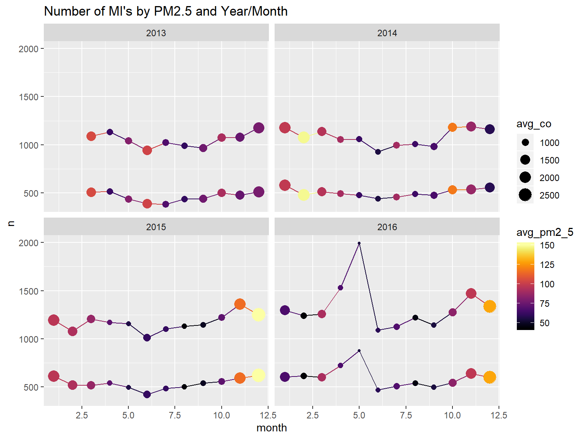
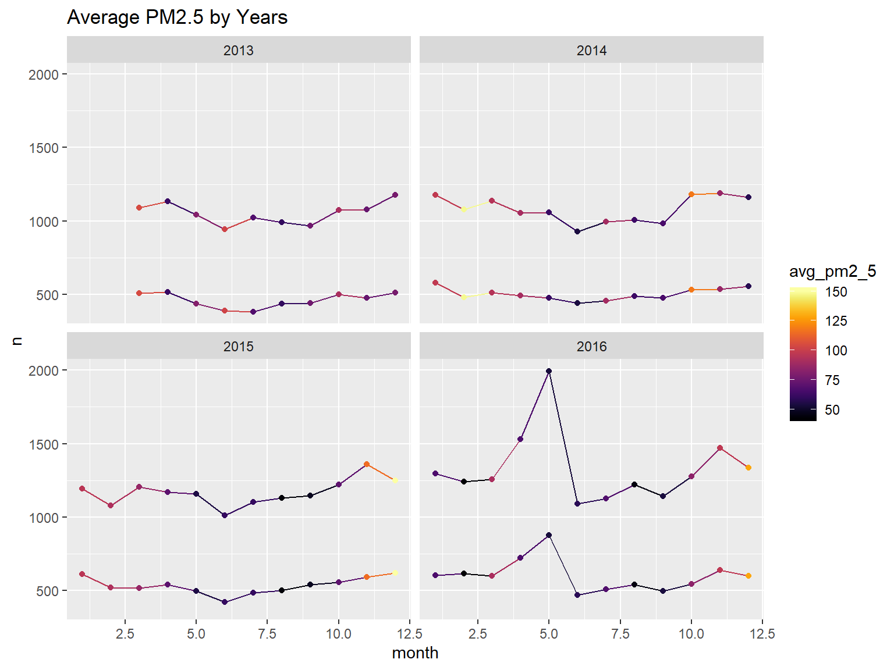
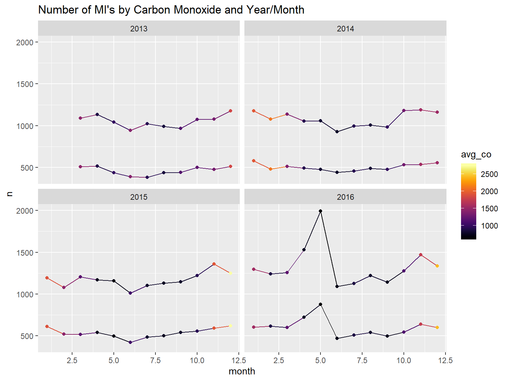
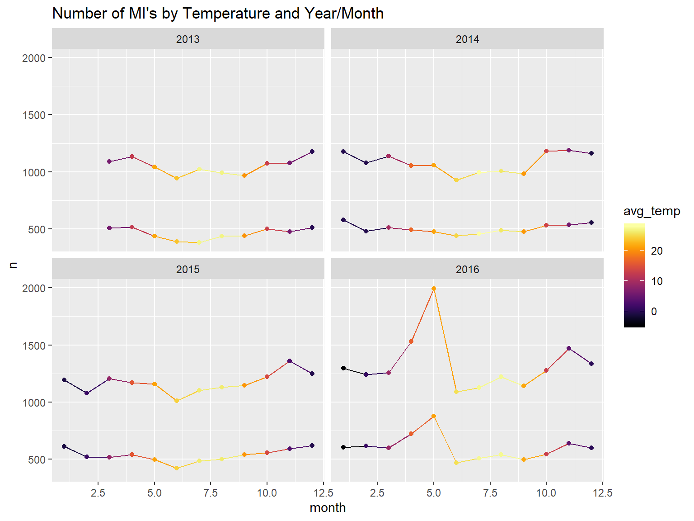

library(tidyverse)
library(lme4)
library(lubridate)
library(wesanderson)
library(viridis)
knitr::opts_chunk$set(
echo = TRUE,
warning = FALSE,
fig.width = 8,
fig.height = 6,
out.width = "90%"
)pal <- wes_palette("Zissou1", 100, type = "continuous")files = list.files("./PRSA_Data_20130301-20170228", full.names = TRUE)
all<-map_df(files, read_csv) %>%
bind_rows() %>%
janitor::clean_names() %>%
select(-no) %>%
mutate(
wd = as.factor(wd),
# station = as.factor(station),
date = as.Date(str_c(year, '-', month, '-', day)),
datetime = as.POSIXct(str_c(year, '-', month, '-', day, ' ', "00:", hour,":00")),
season = case_when(
(month < 3) ~ "winter", #start of Spring is 3/20
(month == 3 & day < 20) ~ "winter",
(month < 6) ~ "spring", #start of Summer is 6/21
(month == 6 & day < 21) ~ "spring",
(month < 9) ~ "summer", #start of Fall is 9/22
(month == 9 & day < 22) ~ "summer",
(month < 12) ~ "fall", #start of Winter is 12/21
(month == 12 & day < 21) ~ "fall",
(month == 12 & day >= 21) ~ "winter"
) )###Remove timeseries variables:
reg<-all %>% select(-date,-datetime, -month,-day,-hour)
full <- lm(pm2_5 ~ ., data = reg)
tab<-full %>% broom::tidy()
knitr::kable(tab, digits = 3)| term | estimate | std.error | statistic | p.value |
|---|---|---|---|---|
| (Intercept) | -973.783 | 92.404 | -10.538 | 0.000 |
| year | 0.334 | 0.046 | 7.243 | 0.000 |
| pm10 | 0.535 | 0.001 | 616.952 | 0.000 |
| so2 | 0.109 | 0.003 | 33.828 | 0.000 |
| no2 | 0.117 | 0.003 | 43.964 | 0.000 |
| co | 0.019 | 0.000 | 258.661 | 0.000 |
| o3 | 0.104 | 0.001 | 76.280 | 0.000 |
| temp | -0.706 | 0.013 | -55.014 | 0.000 |
| pres | 0.292 | 0.010 | 30.156 | 0.000 |
| dewp | 1.593 | 0.009 | 170.757 | 0.000 |
| rain | -0.381 | 0.060 | -6.393 | 0.000 |
| wdENE | -0.351 | 0.249 | -1.410 | 0.158 |
| wdESE | 1.197 | 0.271 | 4.416 | 0.000 |
| wdN | 0.508 | 0.259 | 1.960 | 0.050 |
| wdNE | 0.224 | 0.238 | 0.942 | 0.346 |
| wdNNE | 0.001 | 0.264 | 0.004 | 0.997 |
| wdNNW | 0.536 | 0.274 | 1.954 | 0.051 |
| wdNW | -0.246 | 0.259 | -0.947 | 0.344 |
| wdS | 0.139 | 0.294 | 0.474 | 0.636 |
| wdSE | -0.514 | 0.288 | -1.785 | 0.074 |
| wdSSE | -0.097 | 0.302 | -0.322 | 0.748 |
| wdSSW | 0.115 | 0.281 | 0.410 | 0.682 |
| wdSW | -1.525 | 0.264 | -5.775 | 0.000 |
| wdW | -2.501 | 0.301 | -8.302 | 0.000 |
| wdWNW | -1.505 | 0.280 | -5.374 | 0.000 |
| wdWSW | -1.640 | 0.289 | -5.673 | 0.000 |
| wspm | -0.416 | 0.052 | -8.015 | 0.000 |
| stationChangping | 4.278 | 0.244 | 17.508 | 0.000 |
| stationDingling | 11.103 | 0.253 | 43.968 | 0.000 |
| stationDongsi | 2.507 | 0.241 | 10.395 | 0.000 |
| stationGuanyuan | 1.197 | 0.237 | 5.060 | 0.000 |
| stationGucheng | -2.416 | 0.241 | -10.028 | 0.000 |
| stationHuairou | 6.752 | 0.252 | 26.804 | 0.000 |
| stationNongzhanguan | 1.958 | 0.236 | 8.313 | 0.000 |
| stationShunyi | 6.716 | 0.245 | 27.414 | 0.000 |
| stationTiantan | 2.831 | 0.237 | 11.968 | 0.000 |
| stationWanliu | -0.675 | 0.241 | -2.803 | 0.005 |
| stationWanshouxigong | 0.558 | 0.237 | 2.357 | 0.018 |
| seasonspring | -10.438 | 0.171 | -60.897 | 0.000 |
| seasonsummer | -14.534 | 0.210 | -69.115 | 0.000 |
| seasonwinter | 8.303 | 0.176 | 47.160 | 0.000 |
all %>%
lme4::lmer(pm2_5 ~ year + season + so2 + no2 + co + o3 + temp + dewp + rain + wd + wspm + (1 | station), data = .) %>%
broom::tidy() %>%
knitr::kable(digits = 3)| term | estimate | std.error | statistic | group |
|---|---|---|---|---|
| (Intercept) | -1571.860 | 131.345 | -11.967 | fixed |
| year | 0.772 | 0.065 | 11.843 | fixed |
| seasonspring | -8.107 | 0.230 | -35.256 | fixed |
| seasonsummer | -28.170 | 0.294 | -95.755 | fixed |
| seasonwinter | 8.444 | 0.245 | 34.490 | fixed |
| so2 | 0.305 | 0.005 | 67.163 | fixed |
| no2 | 0.728 | 0.004 | 207.127 | fixed |
| co | 0.038 | 0.000 | 390.292 | fixed |
| o3 | 0.250 | 0.002 | 130.725 | fixed |
| temp | -0.866 | 0.017 | -51.273 | fixed |
| dewp | 2.241 | 0.013 | 175.111 | fixed |
| rain | -1.190 | 0.085 | -14.077 | fixed |
| wdENE | -2.723 | 0.354 | -7.685 | fixed |
| wdESE | 2.526 | 0.386 | 6.550 | fixed |
| wdN | 1.053 | 0.368 | 2.858 | fixed |
| wdNE | -1.944 | 0.339 | -5.737 | fixed |
| wdNNE | -2.277 | 0.375 | -6.075 | fixed |
| wdNNW | 1.923 | 0.390 | 4.933 | fixed |
| wdNW | 2.151 | 0.368 | 5.839 | fixed |
| wdS | 0.739 | 0.418 | 1.767 | fixed |
| wdSE | 1.815 | 0.409 | 4.434 | fixed |
| wdSSE | 1.990 | 0.430 | 4.631 | fixed |
| wdSSW | 1.100 | 0.400 | 2.749 | fixed |
| wdSW | -1.142 | 0.376 | -3.038 | fixed |
| wdW | -3.741 | 0.428 | -8.738 | fixed |
| wdWNW | -0.615 | 0.398 | -1.546 | fixed |
| wdWSW | -2.385 | 0.411 | -5.799 | fixed |
| wspm | 4.219 | 0.073 | 57.781 | fixed |
| sd_(Intercept).station | 7.310 | NA | NA | station |
| sd_Observation.Residual | 42.580 | NA | NA | Residual |
mixed<-all %>%
lme4::lmer(pm2_5 ~ year + season + so2 + no2 + co + o3 + temp + dewp + rain + wd + wspm + datetime + (1 | station), data = .)
mixed %>% broom::tidy() %>% knitr::kable(digits = 3)| term | estimate | std.error | statistic | group |
|---|---|---|---|---|
| (Intercept) | -50701.822 | 861.052 | -58.884 | fixed |
| year | 25.734 | 0.437 | 58.854 | fixed |
| seasonspring | -20.355 | 0.312 | -65.209 | fixed |
| seasonsummer | -33.817 | 0.309 | -109.505 | fixed |
| seasonwinter | -7.326 | 0.366 | -20.010 | fixed |
| so2 | 0.276 | 0.005 | 60.756 | fixed |
| no2 | 0.729 | 0.004 | 208.209 | fixed |
| co | 0.038 | 0.000 | 396.177 | fixed |
| o3 | 0.252 | 0.002 | 132.171 | fixed |
| temp | -0.892 | 0.017 | -52.972 | fixed |
| dewp | 2.234 | 0.013 | 175.342 | fixed |
| rain | -1.224 | 0.084 | -14.535 | fixed |
| wdENE | -2.557 | 0.353 | -7.248 | fixed |
| wdESE | 2.392 | 0.384 | 6.229 | fixed |
| wdN | 1.125 | 0.367 | 3.069 | fixed |
| wdNE | -1.945 | 0.337 | -5.764 | fixed |
| wdNNE | -2.045 | 0.373 | -5.480 | fixed |
| wdNNW | 2.130 | 0.388 | 5.487 | fixed |
| wdNW | 2.283 | 0.367 | 6.226 | fixed |
| wdS | 0.760 | 0.416 | 1.827 | fixed |
| wdSE | 1.550 | 0.408 | 3.802 | fixed |
| wdSSE | 1.945 | 0.428 | 4.546 | fixed |
| wdSSW | 1.083 | 0.398 | 2.719 | fixed |
| wdSW | -1.242 | 0.374 | -3.319 | fixed |
| wdW | -3.541 | 0.426 | -8.305 | fixed |
| wdWNW | -0.271 | 0.396 | -0.684 | fixed |
| wdWSW | -2.137 | 0.409 | -5.220 | fixed |
| wspm | 4.256 | 0.073 | 58.546 | fixed |
| datetime | 0.000 | 0.000 | -57.728 | fixed |
| sd_(Intercept).station | 7.346 | NA | NA | station |
| sd_Observation.Residual | 42.396 | NA | NA | Residual |
cvd<-read_csv("./patient_mi_data/patients_mi.csv") %>% janitor::clean_names()## Parsed with column specification:
## cols(
## gender = col_character(),
## `admission date(year)` = col_double(),
## `admission date(month)` = col_double(),
## `main discharge diagnosis` = col_character()
## )cvd2<- cvd %>%
group_by(admission_date_year, admission_date_month, gender) %>%
summarise(n = n()) %>%
rename(year=admission_date_year) %>%
rename(month=admission_date_month)
pollution<-all %>%
group_by(year, month) %>%
summarize(avg_pm2_5=mean(pm2_5, na.rm=TRUE),
avg_co=mean(co, na.rm=TRUE),
avg_temp=mean(temp, na.rm=TRUE))
model_data <- left_join(pollution, cvd2, by=c("year", "month")) %>%
na.omit() model_data %>%
ggplot(aes(x=month, y=n, color=avg_pm2_5, group=gender)) +
geom_line()+
geom_point(aes(size = avg_co))+
scale_color_viridis(option = "B")+
facet_wrap(year~.) +
ggtitle("Number of MI's by PM2.5 and Year/Month") 
model_data %>%
ggplot(aes(x=month, y=n, color=avg_pm2_5, group=gender)) +
geom_line()+
geom_point()+
scale_color_viridis(option = "B")+
facet_wrap(year~.) +
ggtitle("Average PM2.5 by Years")
model_data %>%
ggplot(aes(x=month, y=n, color=avg_co, group=gender)) +
geom_line()+
geom_point()+
scale_color_viridis(option = "B")+
facet_wrap(year~.) +
ggtitle("Number of MI's by Carbon Monoxide and Year/Month")
It does appear the hospitalizations are higher in winter months. Unfortunately, we will not be able to draw strong conclusions about the effect pollution on heart attacks since it is so strongly correlated with the month/season. We can try to control for temperature instead of month?
model_data %>%
ggplot(aes(x=month, y=n, color=avg_temp, group=gender)) +
geom_line()+
geom_point()+
scale_color_viridis(option = "B")+
facet_wrap(year~.) +
ggtitle("Number of MI's by Temperature and Year/Month")
We have to use month because we have no data on days of the month to separate analysis into seasons.
The count data we are using is the number of people admitted for MI per month.
We could use a rate for the population of beijing for each year (and month), but from 2014 to 2018, the annual growth rate has been 0.3 percent. Beijing’s population peaked at 21.73 million residents in 2016. Source. For this reason (population numbers have been fairly flat) we decided to just use pure count data.
model_data<-model_data%>%
mutate(month=factor(month))
summary(m1 <- glm(n ~ avg_pm2_5 + avg_co + avg_temp + month + year + avg_pm2_5*avg_temp + avg_co*avg_temp, family="poisson", data=model_data))##
## Call:
## glm(formula = n ~ avg_pm2_5 + avg_co + avg_temp + month + year +
## avg_pm2_5 * avg_temp + avg_co * avg_temp, family = "poisson",
## data = model_data)
##
## Deviance Residuals:
## Min 1Q Median 3Q Max
## -17.1244 -11.6150 -0.4644 9.9971 25.1126
##
## Coefficients:
## Estimate Std. Error z value Pr(>|z|)
## (Intercept) -1.575e+02 8.135e+00 -19.355 < 2e-16 ***
## avg_pm2_5 -2.881e-04 1.755e-03 -0.164 0.869619
## avg_co 1.996e-05 1.449e-04 0.138 0.890477
## avg_temp -8.745e-03 5.345e-03 -1.636 0.101822
## month10 1.856e-01 8.592e-02 2.160 0.030749 *
## month11 1.396e-01 4.661e-02 2.995 0.002745 **
## month12 5.000e-02 2.644e-02 1.891 0.058602 .
## month2 -4.234e-02 6.524e-02 -0.649 0.516362
## month3 1.176e-01 7.971e-02 1.476 0.139971
## month4 2.365e-01 8.854e-02 2.671 0.007558 **
## month5 3.499e-01 9.420e-02 3.715 0.000203 ***
## month6 1.121e-01 1.023e-01 1.096 0.273077
## month7 2.075e-01 1.079e-01 1.923 0.054540 .
## month8 2.260e-01 1.086e-01 2.080 0.037506 *
## month9 1.480e-01 9.269e-02 1.597 0.110360
## year 8.150e-02 4.048e-03 20.136 < 2e-16 ***
## avg_pm2_5:avg_temp -8.245e-06 7.709e-05 -0.107 0.914832
## avg_co:avg_temp -2.238e-06 6.560e-06 -0.341 0.733036
## ---
## Signif. codes: 0 '***' 0.001 '**' 0.01 '*' 0.05 '.' 0.1 ' ' 1
##
## (Dispersion parameter for poisson family taken to be 1)
##
## Null deviance: 12952 on 91 degrees of freedom
## Residual deviance: 11752 on 74 degrees of freedom
## AIC: 12570
##
## Number of Fisher Scoring iterations: 4tab<-m1 %>% broom::tidy()
knitr::kable(tab, digits = 3)| term | estimate | std.error | statistic | p.value |
|---|---|---|---|---|
| (Intercept) | -157.450 | 8.135 | -19.355 | 0.000 |
| avg_pm2_5 | 0.000 | 0.002 | -0.164 | 0.870 |
| avg_co | 0.000 | 0.000 | 0.138 | 0.890 |
| avg_temp | -0.009 | 0.005 | -1.636 | 0.102 |
| month10 | 0.186 | 0.086 | 2.160 | 0.031 |
| month11 | 0.140 | 0.047 | 2.995 | 0.003 |
| month12 | 0.050 | 0.026 | 1.891 | 0.059 |
| month2 | -0.042 | 0.065 | -0.649 | 0.516 |
| month3 | 0.118 | 0.080 | 1.476 | 0.140 |
| month4 | 0.236 | 0.089 | 2.671 | 0.008 |
| month5 | 0.350 | 0.094 | 3.715 | 0.000 |
| month6 | 0.112 | 0.102 | 1.096 | 0.273 |
| month7 | 0.208 | 0.108 | 1.923 | 0.055 |
| month8 | 0.226 | 0.109 | 2.080 | 0.038 |
| month9 | 0.148 | 0.093 | 1.597 | 0.110 |
| year | 0.082 | 0.004 | 20.136 | 0.000 |
| avg_pm2_5:avg_temp | 0.000 | 0.000 | -0.107 | 0.915 |
| avg_co:avg_temp | 0.000 | 0.000 | -0.341 | 0.733 |
m1 <- glm(n ~ avg_pm2_5 + avg_co + avg_temp, family="poisson", data=model_data)
tab<-m1 %>% broom::tidy()
knitr::kable(tab, digits = 6)| term | estimate | std.error | statistic | p.value |
|---|---|---|---|---|
| (Intercept) | 6.985401 | 0.021342 | 327.308312 | 0.000000 |
| avg_pm2_5 | -0.000162 | 0.000261 | -0.620408 | 0.534989 |
| avg_co | -0.000092 | 0.000018 | -5.001428 | 0.000001 |
| avg_temp | -0.008677 | 0.000591 | -14.693867 | 0.000000 |
m2 <- glm(n ~ avg_pm2_5 + avg_co + avg_temp + avg_pm2_5*avg_temp + avg_co*avg_temp, family="poisson", data=model_data)
tab<-m2 %>% broom::tidy()
knitr::kable(tab, digits = 6)| term | estimate | std.error | statistic | p.value |
|---|---|---|---|---|
| (Intercept) | 6.902755 | 0.022113 | 312.164914 | 0.000000 |
| avg_pm2_5 | 0.001552 | 0.000348 | 4.454747 | 0.000008 |
| avg_co | -0.000128 | 0.000022 | -5.860567 | 0.000000 |
| avg_temp | 0.008882 | 0.001377 | 6.447817 | 0.000000 |
| avg_pm2_5:avg_temp | -0.000030 | 0.000026 | -1.124952 | 0.260610 |
| avg_co:avg_temp | -0.000017 | 0.000002 | -8.798771 | 0.000000 |
model_data2<-model_data %>%
filter(year!=2016)
m1 <- glm(n ~ avg_pm2_5 + avg_co + avg_temp, family="poisson", data=model_data2)
tab<-m1 %>% broom::tidy()
knitr::kable(tab, digits = 6)| term | estimate | std.error | statistic | p.value |
|---|---|---|---|---|
| (Intercept) | 6.834170 | 0.029405 | 232.415346 | 0.000000 |
| avg_pm2_5 | -0.000147 | 0.000293 | -0.501233 | 0.616207 |
| avg_co | -0.000024 | 0.000022 | -1.102190 | 0.270379 |
| avg_temp | -0.007442 | 0.000775 | -9.606038 | 0.000000 |
m2 <- glm(n ~ avg_pm2_5 + avg_co + avg_temp + avg_pm2_5*avg_temp + avg_co*avg_temp, family="poisson", data=model_data2)
tab<-m2 %>% broom::tidy()
knitr::kable(tab, digits = 6)| term | estimate | std.error | statistic | p.value |
|---|---|---|---|---|
| (Intercept) | 6.795907 | 0.030242 | 224.718643 | 0.000000 |
| avg_pm2_5 | 0.000349 | 0.000392 | 0.891380 | 0.372725 |
| avg_co | -0.000026 | 0.000025 | -1.016487 | 0.309398 |
| avg_temp | 0.000351 | 0.001699 | 0.206354 | 0.836514 |
| avg_pm2_5:avg_temp | 0.000005 | 0.000030 | 0.176713 | 0.859734 |
| avg_co:avg_temp | -0.000008 | 0.000002 | -3.612010 | 0.000304 |